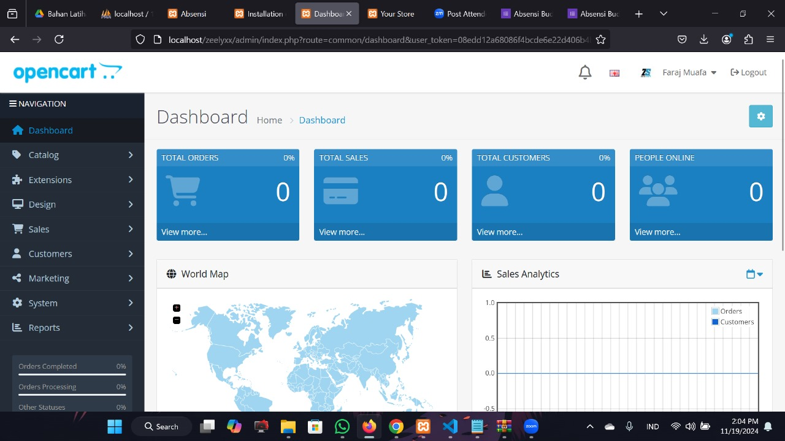

Back to all projects
Website E-Commerce
Toko online modern dengan filter produk, keranjang belanja, dan sistem pembayaran.

Overview
Website e-commerce ini dibangun untuk mensimulasikan pengalaman belanja online yang lengkap, mulai dari katalog produk, filter berdasarkan kategori dan harga, hingga proses checkout. Backend menggunakan PHP dengan database MySQL melalui Laragon sebagai environment lokal.
My Role
Full-stack merancang UI, struktur database, dan alur checkout.
Challenges
- Mengelola state keranjang belanja tanpa framework JS modern.
- Menyusun struktur database relasional untuk produk, kategori, dan transaksi.
- Mengintegrasikan API pembayaran sederhana.